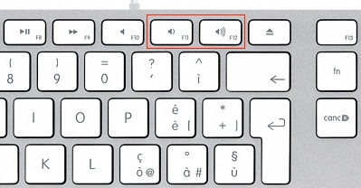
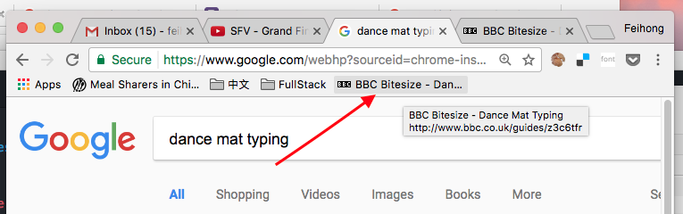

Computer Literacy Lesson 1
Chinese Mutual Aid Association
Introduce yourself!
- What is your name?
- Where are you from?
Survey questions
- What do you hope to learn in this class?
- Do you have a computer at home? If so, what kind?
- Is there someone at home who helps you with computers?
What you need to bring
Paper for taking notes
That's it! We provide the computers.
Please ask questions!
Don't be afraid to ask any question!
Your instructor and your fellow students are here to help you!
Turning on the computer
The power button is on the back of the computer. Press it once to turn the computer on.

Logging into the computer
- Make sure to log in as the "Student" user
- Ask the instructor for the password
Adjusting the volume
Press and to adjust the volume.

Open a web browser
From the dock at the bottom of the screen, click on Google Chrome.

Visit this course's website
Click on the address bar in Google Chrome, type the following URL, and then press the Return key:
ChineseMutualAid.github.io/computer-literacy/

Go to Lesson 1
- Click on Lesson 1 to view the web page for this lesson.
- Click on View slideshow to view the slideshow for this lesson.
Using the slideshow
- Press ← and → keys to move through the slides
- The number of the slide is in the bottom right
- Links are blue, you can click on them to open another web page
Using the mouse
If you already feel comfortable using the mouse, then you can skip these exercises.
Using the keyboard
Try to complete Level 1 of Dance Mat Typing
Using bookmarks in the browser
We are going to show you how to bookmark a website so that you can easily visit it without needing to remember its URL.
There are a few steps to this process.
Show the bookmarks bar
Click in the upper right, then Bookmarks, and finally Show Bookmarks Bar

Create a bookmark
Click in the upper right, then Done

Click the newly-created bookmark
The bookmark will appear in the bookmark bar. Create an empty tab and click the bookmark to prove it works.

Homework assignment
If you have a computer at home, create bookmarks for these two websites:
- www.bbc.co.uk/guides/z3c6tfr
- chinesemutualaid.github.io/computer-literacy/
You can even make bookmarks on your smartphone! (Although the process is a little bit different.)
The End
Yay! You completed the first lesson!